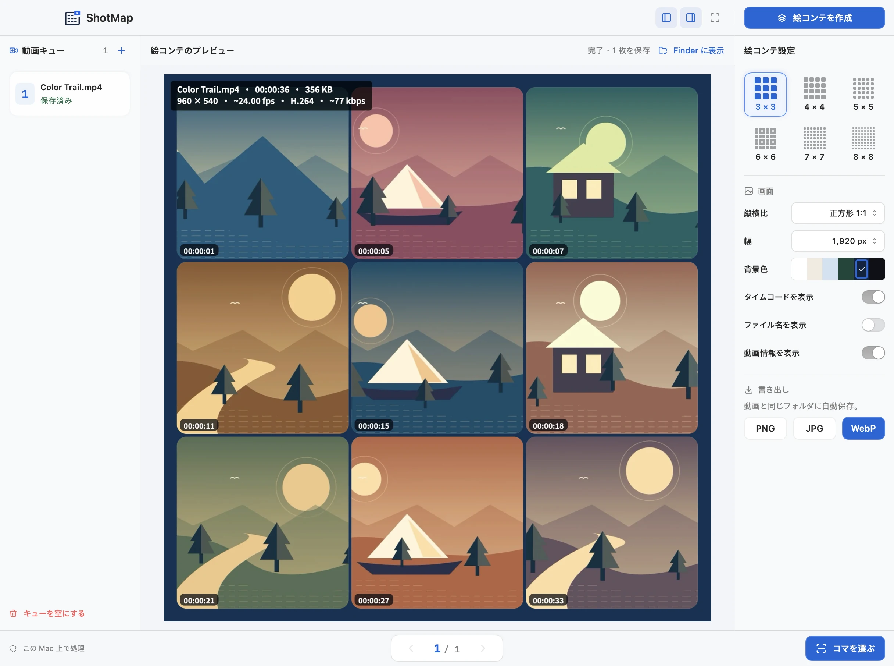

動画情報付きの正方形の絵コンテを WebP で書き出す
1:1 のレイアウトで、タイムコードと元の動画情報を表示します。
このガイドでは macOS 13 以降で ShotMap 0.2.20 と、36 秒・960 × 540 のサンプル動画 Color Trail.mp4 を使います。動画をファイルの保存が可能なフォルダに置いてください。
サンプル動画 Color Trail.mp4 をダウンロード
- Color Trail.mp4 をキューに追加し、絵コンテ設定で 3 × 3、正方形 1:1、1920 px を選びます。
- 紺色の背景を選び、タイムコード表示をオンのまま、動画情報を表示をオンにします。動画情報にファイル名が含まれるため、ファイル名の表示はオフのままで構いません。
- 書き出しで WebP を選び、絵コンテを作成をクリックします。作成後にFinder に表示をクリックします。

書き出した画像を確認
Finder の「情報を見る」で拡張子が .webp であることを確認します。この例で 1:1 の設定から書き出された画像は 1920 × 1919 px です。「プレビュー」で各コマのタイムコードと左上の動画情報を確認します。